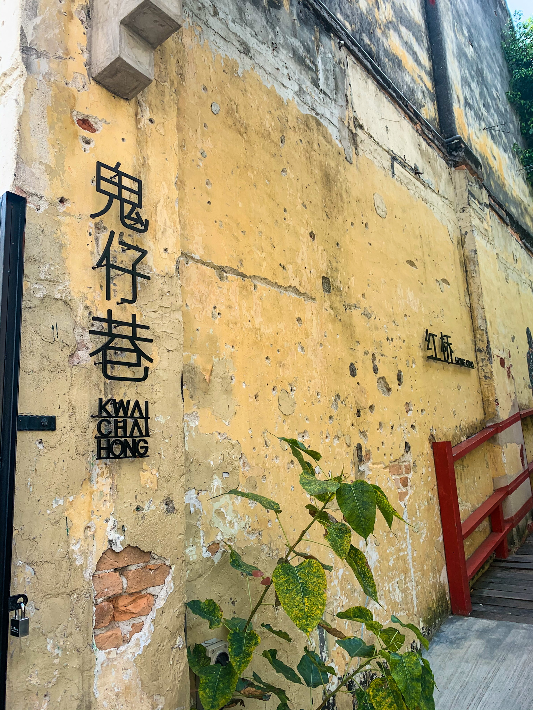
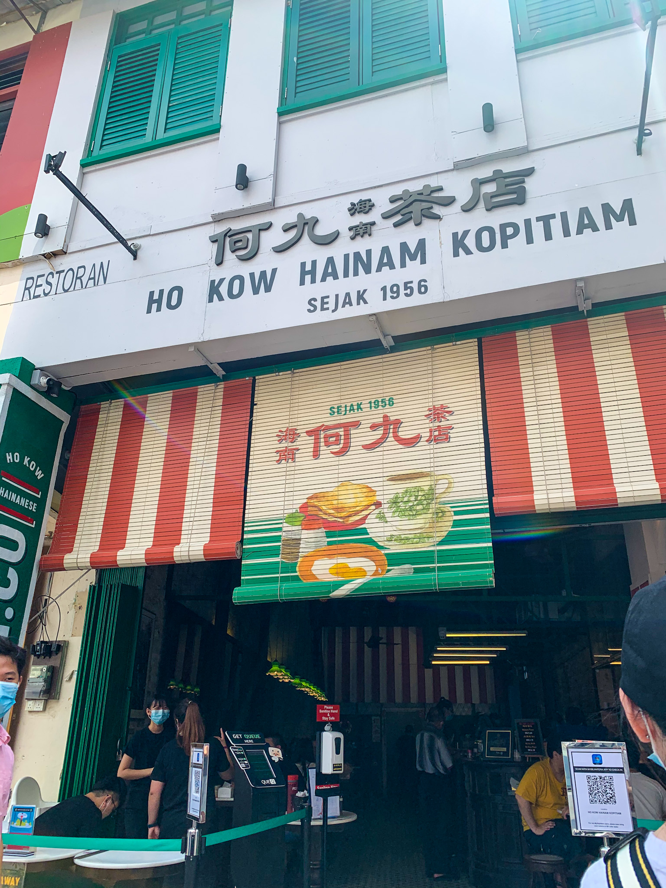

Kwai Chai Hong (鬼仔巷) is the city's latest project in preserving the Chinese heritage stretching back to as far as the 1960s. It is a small alley behind Petaling Street filled with numerous of murals that depict the life that it once was decades ago.
Kwai Chai Hong is also referred to as the "Ghost Lane" (directly translated from Cantonese). Rumor has it that the name came about long ago when the screams and laughters of mischevious Chinese-migrant kids mimicked the ‘kwai chai’ sounds.
Today, Kwai Chai Hong is filled with vibrant colors and different eateries surrounding the humble area. If you are in town, this is somewhere you definitely have to visit!

After you are done taking a trip down memory lane, stop by Ho Kow Kopitiam to quench your thirst and fill your belly with some Hainan coffee and kaya toast. PS. It is my go-to breakfast order!

Kwai Chai Hong
Lorong Panggung
Off Jalan Petaling, Kuala Lumpur
*open to the public for free from 9am to 6pm daily*